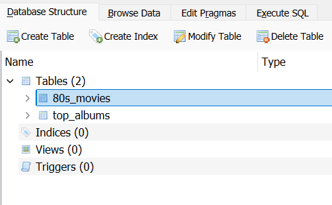
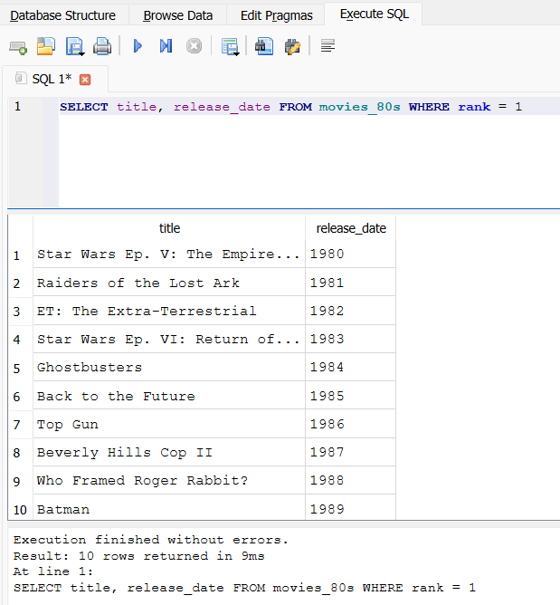

In this lesson, we'll explore how to interact with SQLite databases using SQL commands within DB Browser. We'll cover:
 Executing SQL Commands
Executing SQL Commands
While DB Browser's graphical interface provides a gentle introduction to SQLite, the true power of this database system lies in its ability to understand and respond to SQL commands. These commands offer a precise and flexible way to interact with your data, allowing you to perform tasks that would be cumbersome or impossible with the graphical interface alone.
For this lesson, we'll be working with a new database called "entertainment.db". This database contains information about popular 80s movies and top selling music albums. To proceed, please open this database in DB Browser.
 Task: Open the
"entertainment.db" Database
Task: Open the
"entertainment.db" Database
You should now see the "entertainment.db" database loaded in DB Browser, with the "movies_80s" and "top_albums" tables listed in the "Database Structure" tab.
The "entertainment.db" database offers a somewhat limited but nonetheless potentially interesting repository of information for practising your SQL querying skills. It houses two tables, each with a distinct set of attributes:
Structure of
entertainment.db
With these datasets at your disposal, the possibilities for exploration are perhaps not endless, but certainly sufficient for our current purposes. But how does one access and analyse this information? The "Execute SQL" tab provides the means.
The "Execute SQL" tab in DB Browser is your interface for interacting with these datasets using SQL commands. Here, you can construct queries to retrieve specific data, filter records based on certain criteria, and perform basic calculations.
To access this tab, simply click on "Execute SQL" in DB Browser. You'll be presented with a text editor for composing your SQL queries and a button to execute them. The results will be displayed below, offering a glimpse into the patterns and trends hidden within the data.
Task: Execute an SQL Query
to Retrieve Top-Ranked Movies
SELECT title, release_date FROM movies_80s WHERE rank = 1The query result should display the title of the top-ranked movie in the "movies_80s" table from each year, as shown below:
In the following sections, we'll examine the fundamental SQL clauses that will enable you to navigate and analyse these datasets with a modicum of confidence.
The SELECT, FROM, and WHERE clauses are the building blocks of SQL queries. They allow you to specify what data you want to retrieve and under what conditions. Let's break down each clause:
The WHERE Clause: Your
Data Detective
In the world of SQL, the WHERE clause acts like a
detective, helping you pinpoint exactly the information you need
from your database. Think of it as a filter that sifts through
your data and only reveals the records that match your specific
criteria.
WHERE in Action:
"80s_movies"
Let's say you want to find all the movies in your "movies_80s" table that were distributed by Warner Bros. You would use the WHERE clause with a condition
SELECT * FROM movies_80s WHERE distributor = 'Warner Bros'This query tells the database: "Show me all the columns (*) from the 'movies_80s' table, but only where the 'distributor' field is equal to 'Warner Bros.'"
The WHERE clause is incredibly versatile. You can use it with various operators to create different conditions:
You can even combine multiple conditions using AND,
OR, and NOT to create more complex
filters.
By combining these clauses, you can craft queries that extract precisely the information you need. Let's put this into practice with a few examples.
Task: Practice with SELECT,
FROM, WHERE
SELECT title, genre FROM movies_80s WHERE release_date = 1985SELECT title, distributor FROM movies_80s WHERE rank > 5SELECT title, release_date FROM movies_80s WHERE genre = 'Comedy'SELECT title, tickets_sold FROM movies_80s WHERE distributor = 'Warner Bros.'SELECT title, rank FROM movies_80s WHERE genre = 'Action' AND rank <= 3SELECT title, release_date FROM movies_80s WHERE release_date BETWEEN 1983 AND 1986SELECT title, distributor FROM movies_80s WHERE distributor = 'Universal' OR distributor = 'Columbia'SELECT title, genre FROM movies_80s WHERE genre IN ('Comedy', 'Adventure', 'Action')SELECT title, tickets_sold FROM movies_80s WHERE rank BETWEEN 3 AND 6 AND release_date > 1984SELECT title, distributor FROM movies_80s WHERE genre NOT IN ('Comedy', 'Adventure') AND rank < 5 AND tickets_sold > 20000000As you practice with these queries, you'll gain a deeper understanding of how to extract meaningful insights from the dataset. Feel free to experiment and explore the data to your heart's content!
Using !=, <>, NOT,
and Wildcards
In SQL, you can use != or <> to
express "not equal to". Both
operators achieve the same result. For instance, to retrieve all
movies NOT released in 1985, you could use either of the following
queries:
SELECT * FROM movies_80s WHERE release_date != 1985;SELECT * FROM movies_80s WHERE release_date <> 1985;
The keyword NOT is used in different
contexts, such as with the
IN and BETWEEN operators. For example,
to retrieve movies with a genre
NOT IN ('Comedy', 'Adventure'), you
would use:
SELECT * FROM movies_80s WHERE genre NOT IN ('Comedy', 'Adventure');To search for patterns within text data, you can use wildcards with LIKE Operator. The most common wildcards are:
LIKE '%Rock%' would match "Rock", "Rock
and Roll", "Psychedelic Rock", and any other string containing
"Rock".
LIKE 'Bl_es' would match "Blues" but not
"Blues Rock".
For instance, to find all albums with "Rock" in their subgenre (remember that an album can have multiple subgenres, separated by commas and a space), you would use:
SELECT * FROM top_albums WHERE subgenre LIKE '%Rock%';Or to find albums where the artist starts with "The" you would use:
SELECT rank, year, album, artist FROM top_albums WHERE artist LIKE 'The%';The "top_albums" table presents a curated selection of influential music albums, spanning various genres and eras. Using the SELECT, FROM, and WHERE clauses, you can craft queries to explore this dataset in greater detail.
Task: Practice - Explore
"top_albums"
Using your newfound SQL querying skills, answer the following
questions: Remember to utilise the SELECT, FROM, and WHERE
clauses, along with the operators we've covered (such as
=, >, <,
BETWEEN, IN, NOT IN,
LIKE, etc.) to construct your queries. Again, try
these by yourself, but if you get stuck, you can check the
solution below each question or better still take a "look",
"cover", "write", "query", "check" approach.
SELECT * FROM top_albums WHERE year BETWEEN 1970 AND 1979 AND genre = 'Rock'SELECT album, artist FROM top_albums WHERE rank <= 10SELECT * FROM top_albums WHERE genre = 'Funk / Soul'SELECT * FROM top_albums WHERE subgenre LIKE '%Blues%'SELECT * FROM top_albums WHERE year BETWEEN 1965 AND 1975 AND genre = 'Rock'SELECT * FROM top_albums WHERE artist = 'The Beatles' OR artist = 'The Rolling Stones'SELECT * FROM top_albums WHERE subgenre = 'Folk Rock' OR subgenre = 'Pop Rock'SELECT * FROM top_albums WHERE genre != 'Rock'SELECT * FROM top_albums WHERE rank BETWEEN 20 AND 50 AND subgenre LIKE '%Pop%'SELECT * FROM top_albums WHERE subgenre LIKE '%Alternative%' AND NOT year BETWEEN 1990 AND 1999
Remember to utilise the SELECT, FROM, and WHERE clauses, along
with the operators we've covered (such as =,
>, <, BETWEEN,
IN, NOT IN, LIKE, etc.) to
construct your queries.
In this lesson, we explored how to interact with SQLite databases using SQL commands within DB Browser. We covered the "entertainment.db" dataset, the "Execute SQL" tab, and the SELECT, FROM, and WHERE clauses. By practicing with SQL queries, you've gained a foundational understanding of how to retrieve specific data from a database and filter records based on certain criteria.
SQL Formatting Conventions
While SQL doesn't enforce strict formatting rules, consistent conventions improve readability. Common practices include:
SELECT title, genre
FROM movies_80s
WHERE genre = 'Comedy';SELECT title, genre FROM movies_80s WHERE genre = 'Comedy';These practices make your SQL queries easier to read and modify.